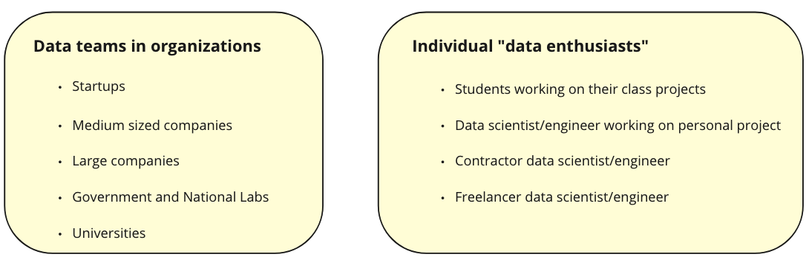

Project Overview
Pandas is a highly popular tool for data science and AI, boasting millions of dedicated users.
With its arsenal of over 600 functions, pandas empowers data scientists to efficiently clean, transform, summarize, and featurize data.
However, pandas struggles with larger datasets, causing out-of-memory errors and slow performance. As datasets scale, the only viable alternative is to turn to "big data" frameworks like database systems or Spark.
Nevertheless, these technologies come with a steep learning curve, particularly for users without a computer science background, necessitating months, if not years, to master.
As a result, many data teams continue to prefer using pandas rather than database systems or Spark.
During my time at Ponder, I lead development and launch of
Ponder's B2B platform, a technology that allows data teams run pandas anywhere at scale, be it their laptops, clusters, or on the cloud.
In particular, Ponder allows data teams to run their pandas code directly in their data warehouse, be it Snowflake, BigQuery, or Redshift.
Our MVP launch has attracted a lot of
community attention and led to the
acquisition of early adopters, POC customers, and paying customers.
My Role
- 01. Conducted interviews with with different data teams globally to gain insights and inform the product strategy, leading to the identification of the right product-market fit.
- 02. Prioritized customers needs and converted them to actionable engineering-facing user stories.
- 03. Closely worked with engineering, marketing, sales, and leadership teams to define product roadmap.
- 04. Set data-driven KPI and leveraged user data to drive dynamic marketing and customer acquisition decisions.
- 05. Conducted dogfooding sessions and soft launches as part of the product planning process to ensure that the product is fully tested and ready for a wider audience prior to its official launch.
- 06. Created and maintained product documentation.
- 07. Presented product strategy and roadmap to the leadership.
Duration
8 months
Teams Involved
Engineering, Marketing, Sales, Leadership
Team Size
19 people
...
Customer and Market Research
I conducted extensive customer and market research over a period of several months. Our research involved engaging with more than 100 individual data enthusiasts, data teams from different small and large organizations, as well as leadership at both small and large organizations.
We also analyzed the market to gain an understanding of current trends and technologies, as well as their pricing models and target users.
Through this comprehensive research process, we were able to gather valuable insights into the needs and preferences of our potential customers, and develop a strategy that meets their unique requirements.
Customer Segmentation
One of the main outcomes of our customer research was to better understand the customers landscape and their segments. In particular, we segmented our customers into two distinct groups: 1) data teams in organizations and 2) individual data enthusiasts.

Our research has revealed that the market size for individual data enthusiasts is significantly larger than that of data teams in organizations.
Furthermore, in our discussions with many data enthusiasts, we discovered that they had a strong preference for using pandas for their data analysis.
However, we found that this group of customers typically did not work with big data. Thus, their rarely needed a technology to enbale them to scale their workflows.
On the other hand, data teams in organizations were the ones that faced many issues scaling their pandas workflows because they often deal with big data.
Based on these findings, we have decided to shift our focus to target data teams in organizations as our primary customer segment.
Customers pain points
- 01. Steep Learning Curve: Many of our participants expressed that one of the major challenges they faced was the difficulty and time-consuming nature of learning "big data" frameworks such as Spark, particularly for junior team members who are just joining the organization.
For example, a data scientist at Shopify said: I find Spark to be quite challenging and overwhelming, especially when it comes to debugging and optimizing my code for large datasets.
- 02. Cost-related Concerns: Almost all people we talked to have reported challenges managing the costs of their data science workflows that are executed on different clusters. Another customer at an early stage startup mentioned: The cost of running our data processing jobs on engines like Databricks is becoming increasingly expensive and is impacting our ability to stay within budget.